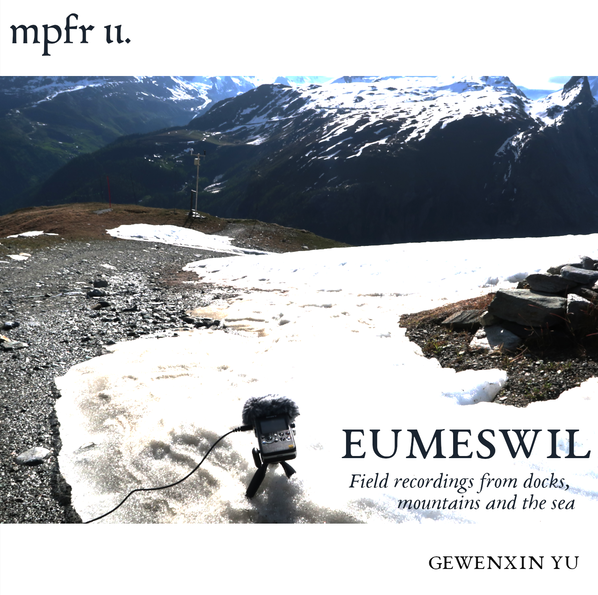

Eumeswil (2024)
This pre-release field recording set eternalizes the sonical soul of water: rivers, rain, glaciers, and hidden aquatic whispers.

Liner Notes
- Sound Sources:
- Docks & Sea: Mei Hua Beach, Gusheng Road of Kulangsu; White Cliffs of Dover (and station sound);
- Mountains: Wide range of trekkers' soundscape of the Monte Rosa - Matthorn circle (near the sign N8/N9);
- Animals & Springs: Cattles of Vallorcine, Haute-Savoie;
- Equipment & Software: SONY D100, Ardour7
- Total duration of v1: 2h 25m 22s (13 tracks, 8722 seconds)
Note that pure field-recordings from Dover are under processing.
Copyright © 2025 Mantle Productions
Eumeswil v1 is licensed under CC BY-NC-SA 4.0.